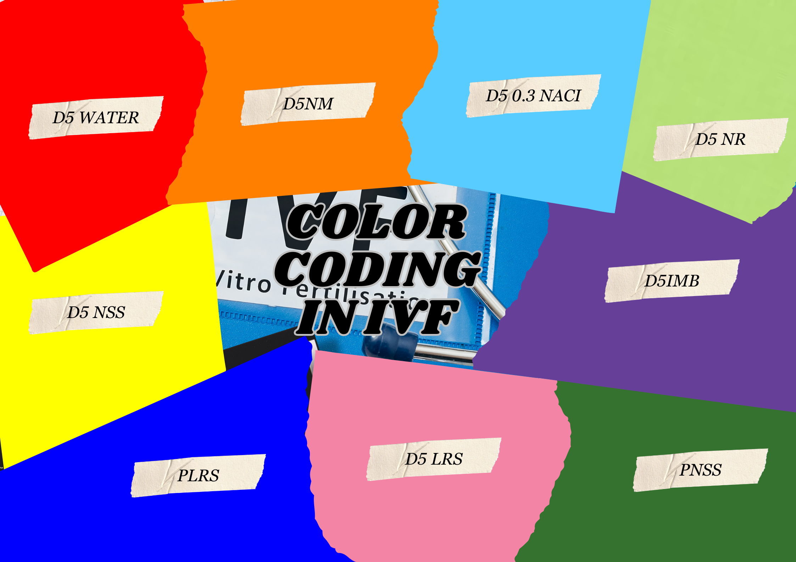

In intravenous fluid (IVF) administration, color coding serves a crucial purpose. It helps healthcare professionals quickly identify the type of
fluid being administered, reducing the risk of errors. Here’s a breakdown of the color coding commonly used for IVF:
1. D5 LRS (Dextrose 5% in Lactated Ringer’s Solution): Pink
2. D5 NM (Dextrose 5% in Normal Saline): Orange
3. D5 NSS (Dextrose 5% in Normal Saline): Yellow
4. D5 NR (Dextrose 5% in Ringer’s Solution): Light Green
5. D5 Water: Red
6. D5IMB (Dextrose 5% in Isotonic Maintenance Solution with Bicarbonate): Violet
7. D5 0.3 NaCl (Dextrose 5% in 0.3% Sodium Chloride): Light Blue
8. P NSS (Plain Normal Saline): Dark Green
9. P LRS (Plain Lactated Ringer’s Solution): Blue
For more details, visit IV Fluids Clinical Discussion | PPT (slideshare.net)

|